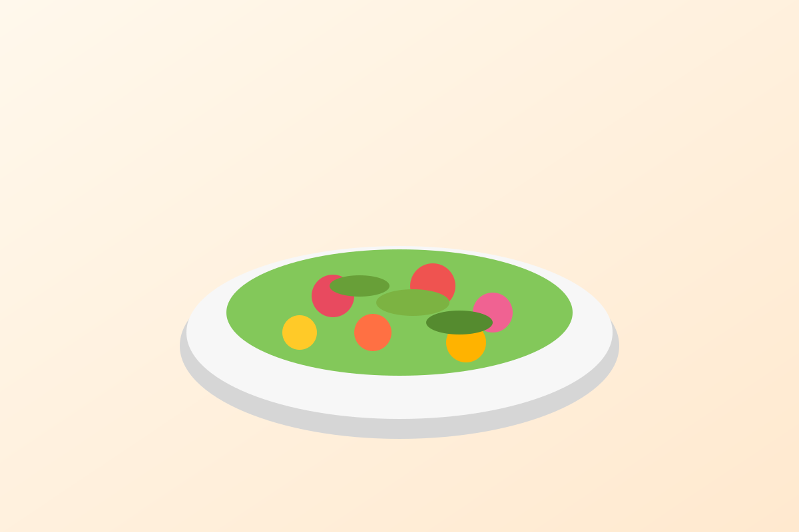
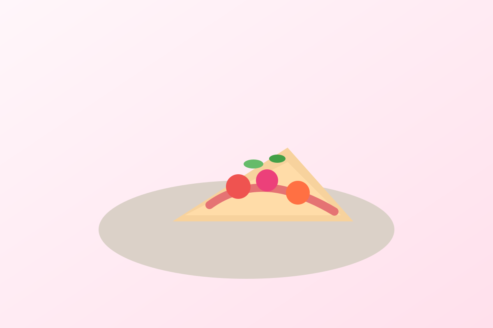
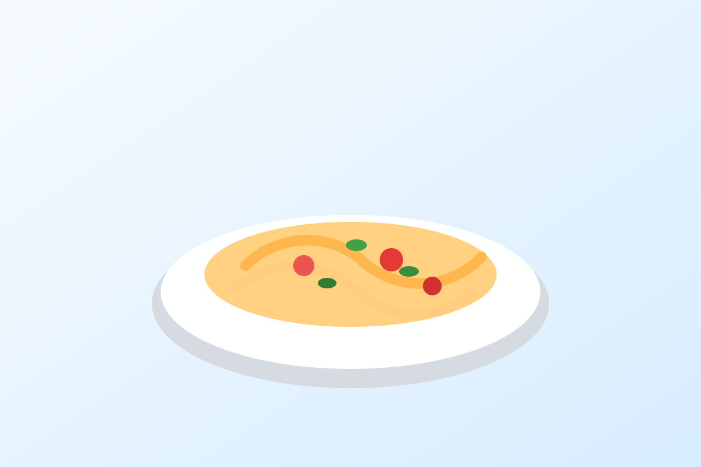

Arroz meloso de temporada
Receta de cuchara para dias frios, con caldo casero y verduras de proximidad.
Ver detalle de la recetaExplora propuestas de cocina mediterranea, dulces caseros y cocina de mercado. Usa los filtros para ver los elementos que mas te interesan.

Receta de cuchara para dias frios, con caldo casero y verduras de proximidad.
Ver detalle de la receta
Base crujiente, fruta de temporada y acabado suave con miel local.
Ver detalle del postre
Parada recomendada para comprar producto fresco y descubrir productores locales.
Fuentes y referencias